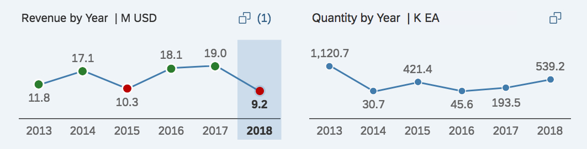
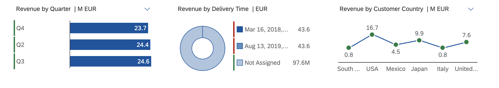

Visual Filters
You configure visual filters by enhancing the ValueList annotation associated with the filter field. For more
information, see Enhancing ValueList Annotations for Visual Filters. This setup supports line and bar charts.
Application developers must ensure that the records available via the value help entity set associated with the visual filter are the same as the records available via the value help entity set associated with the regular filter field. This is required for a smooth sync of the selected values across the different filter modes.
The visual filter includes only the first measure and dimension from the first chart annotation within the specified
PresentationVariantQualifier. Make sure that the dimension you specify in the chart and the
ValueListProperty of the OUT parameter is the same. You can also define a
SortOrder property in the PresentationVariant annotation to control the sort order.
Sorting in visual filters is based on this logic:
- For the bar chart (and in SAP Fiori elements for OData
V2 also for the donut
chart type), sorting is always based on the measure displayed (the default is descending order). To change the sort
order, define the
SortOrderproperty in thePresentationVariantannotation. - For line charts with time-based dimensions, sorting is always based on the dimension displayed in ascending order,
however, only the last six time periods are
displayed.
The sorting by the annotation is ignored for time-based dimensions for line-charts in the visual filter.
- For line charts with non time-based dimensions, sorting is always based on the dimension (the default is ascending
order). To change the sort order, define the
SortOrderproperty in thePresentationVariantannotation.
Charts
Chart Type
You can select chart data points and segments in a chart. These selections influence the other chart filters depending on the configuration of the value list annotation.
|
The Chart Type… |
Displays… |
|---|---|
|
Bar |
Top or bottom three records |
|
Line |
First or last six data points |
Donut (only supported in SAP Fiori elements for OData V2) |
Top or bottom two records |
In SAP Fiori elements for OData
V2, you can enable the visual filter (donut chart type) to
display an overlay message if there are measures with negative values. Set the Analytics.AccumulativeMeasure
annotation to false as shown in the example. By default, the value of the
Analytics.AccumulativeMeasure annotation is
true.
<Annotations Target="SEPMRA_ALP_SO_ANA_SRV.Z_SEPMRA_C_ALP_QUARTERVHType/DifferenceAmount">
<Annotation Term="Analytics.Measure" Bool="true" />
<Annotation Term="Analytics.AccumulativeMeasure" Bool="false" />
</Annotations>
Chart Title
ALP displays chart titles in the following order: <Measure Name> by <Dimension Name> in <Scale factor> <UoM>
- <Measure Name> indicates the measure associated with the chart. Use
sap:label() - <Dimension Name> indicates the dimension associated with the chart. Use
sap:label() -
<Scale Factor> indicates the scale as specified using the
ScaleFactorproperty of theDataPointannotation associated with the measure displayed in the chart.Scale factor annotation
<Annotation Term="UI.DataPoint" Qualifier="LineChartTimeDataPoint"> <Record Type="UI.DataPointType"> <PropertyValue Property="Criticality" EnumMember="UI.CriticalityType/Positive"/> <PropertyValue Property="Title" String="Total Pricing"/> <PropertyValue Property="Value" Path="totalPricing"/> <PropertyValue Property="ValueFormat"> <Record Type="UI.NumberFormat"> <PropertyValue Property="ScaleFactor" Decimal="1000"/> // A value of 1000 results in "K" in the title bar since chart value is scaled with thousand! </Record> </PropertyValue> </Record> </Annotation>If not specified, SAP Fiori elements uses a built-in logic to determine the best scale factor to be used for the values displayed in the chart.
SAP Fiori elements recommends that you do not specify a hard-coded scale factor that doesn't work well with changing measure values. Use it only if you can ensure that the range of possible values for the measure is fixed and there'sis a preferred scale factor to be used.
The scale factor in the chart and chart title are of the same scale.
Text Arrangement
You can change the formatting of the text that appears on the vual
filter chart axis labels, chart
tooltips,
and within the selected link (if a chart context is selected). The default view of the visual filter bar is based on the filter fields
defined in the TextArrangement annotation and its type in the main entity set to change the text behavior like this:
|
Text Arrangement Type |
Description |
|---|---|
|
TextFirst |
Use the visual filter to combine measures or item counts with filter values. The ChartDefault type that has the sap:text first, followed by the ID in brackets, for example, "Notebook (001)" |
|
TextLast |
ID followed by the sap:text in brackets, for example, "001 (Notebook)". |
|
TextOnly |
Shows only the sap:text, for example, "Notebook" |
|
TextSeparate |
Shows only the ID, for example, "002" |
XML Annotation
<Annotations Target="ProductType"> //Main EntitySet <Annotation Term="com.sap.vocabularies.UI.v1.TextArrangement" EnumMember="com.sap.vocabularies.UI.v1.TextArrangementType/TextFirst"/> </Annotations>
ABAP CDS Annotation
@UI.textArrangement: #TEXT_FIRST
annotate view ProductType with {
}CAP CDS Annotation
annotate ProductType @( UI.TextArrangement : #TextFirst );
Lazy Loading of Visual Filters
In SAP Fiori elements for OData
V2, you enable lazy loading of visual filters by configuring the
lazyLoadVisualFilter setting in the descriptor file.
It's
disabled by default.
If you enable lazy loading, then the batch call for loading of visual filters is deferred until the user switches to the visual filter bar.
Descriptor setting
"settings": {
"qualifier": "MainContent",
"defaultContentView": "charttable",
"smartVariantManagement": true,
"showGoButtonOnFilterBar": true,
"multiSelect": true,
"lazyLoadVisualFilter":true,
"tableType": "AnalyticalTable",
....
}
In SAP Fiori elements for OData V4, lazy loading is enabled by default and can't be switched off.
Fixed Values on Visual Filters
To display default records on the visual filter chart, configure the
SelectionVariant annotation with filter values
(SelectOptions property) and link it with the
ValueList annotation.
The IN/OUT parameter values take precedence over the
SelectionVariant values for the fields that have values coming
from both options.
Handling date-based filter fields
If the SelectionVariant has date-based filter fields, you must
specify the value in the format "Z'. Ex:"2018-10-15T00:00:00Z",
with the time part as zeroes and appended with 'Z'.
|
Scenario |
Description |
|---|---|
|
Scenario 1: Annotation configuration Chart dimension = "Status", Select Option in SV = [("Status", Values = "In Progress", "New"), ("Project", Values="List Report")] |
|
|
Scenario 2: Overriding annotation configuration from filter bar Change the project value from |
Specifying Analytical List Page as a value for the project in the filter bar, re-renders charts to display records for In Progress and New status values of the Analytical List Page project.
The in/out parameter mapping values set for the other
properties in the |
In SAP Fiori elements for OData
V2, you can
render the visual filter with a parametrized entity set as the collection path. To
do so, you need to provide parameters in the SelectionVariant
annotation. Any values added in the smart filter bar take priority over the
SelectionVariant annotation values.
|
Scenario |
Description |
|---|---|
|
Scenario 1: Annotation configuration Parameter in SelectionVariant = [("P_DisplayCurrency", Value="USD")] |
The chart renders records with the currency unit USD. |
|
Scenario 2: Overriding annotation configurations on the filter bar Change USD to EUR on the filter bar |
If you specify EUR as a value for
|
Date Selection
Visual filters support date-based, single/multi-select based filter fields in the Universal Time Coordinated (UTC) format. Semantic dates and date ranges are not supported.
Unit of Measure with Multiple Units of Measure
Visual filter charts do not show up if the back end returns data with multiple units of measure (UoM). To achieve a single UoM, set the required UoM in the filter bar or change all the UoMs into one UoM in the back end.
For currency-based visual filter values, the currency value could come from another filter field in the main entity set (mapped to the value help currency field based entity set through the standard IN mapping).
Semantic Coloring for Visual Filters Based on Dimension Values
Semantic coloring is based on the defined criticality in the ValueCriticality annotations for dimensions. The value
returned from the path determines the color.
-
No color is applied to the chart dimension when a neutral value is returned.
-
Chart measure semantic coloring takes precendence over dimension semantic coloring.
For a sample annotation applicable to both SAP Fiori elements for OData V2 and SAP Fiori elements for OData V4, please see the Support for Criticality Coloring section in Configuring Charts.
Guidelines
Show the filter dimension with one measure in the visual filter not with multiple measures.
Filter dimensions in the regular filters (filter bar) have exactly one representation in the visual filter bar.
Do not show the same filter dimension with two or more different measures at the same time in the visual filter bar. The example shows
the filter Dimension Year with two different measures Revenue and
Quantity. Showing the filter dimensionYear twice is not in sync with the regular
filter, where it is shown only once. Furthermore, matching between the two filter types won't work.
If the use case requires you to show a dimension with different measures, consider using an overview page instead.
| Do | Don't |
|---|---|
 |
 |
| For each dimension, display exactly one representation in the visual filter bar. | Do not use the same filter dimension with different measures. |
SAP Fiori elements for OData V2 also supports the visual filter setup for donut charts, and you can define visual filters for parameters.
Display of Empty Values
The empty dimension value is displayed as Not Assigned in the visual filter chart. Note that this impacts the display only of visual filters but not of the value help, drop down, or compact filters. For the value help, drop down, or compact filter, it is displayed as <empty>.

Date Selection
Visual filters support date-based, single selection fields in the Universal Time Coordinated (UTC) format. Visual filters also support string-based fields that denote a time period via the following annotations:
-
Edm.DateTime and sap:display-format="Date"
-
Edm.String and sap:semantics="yearmonthday"
-
Edm.String and sap:semantics="yearmonth"
-
Edm.String and sap:semantics="year"
-
Edm.String and sap:semantics="yearquarter"
-
Edm.String and sap:semantics="yearweek"
-
Edm.String and sap:semantics="fiscalyear"
-
Edm.String and sap:semantics="fiscalyearperiod"
Displaying the value in the visual filter and its tooltip is impacted. Value help or the dropdown for selecting the values remains the same if sap:semantics="yearmonth" is set.
You can see the date selection button on the visual filter for fields annotated with
sap:filter-restriction="single-value". For fields annotated with
sap:filter-restriction="multiple", you see the value help selection button.
Sample Metadata
<Property Name="StartDate" Type="Edm.DateTime" sap:display-format="Date" sap:aggregation-role="dimension" sap:label="Date" sap:filter-restriction="single-value"/> <Property Name="StartDate" Type="Edm.String" sap:semantics="yearmonthday" sap:aggregation-role="dimension" sap:label="Date" sap:filter-restriction="single-value"/>
Number Formatting
NumberOfFractionalDigits
information can be provided in com.sap.vocabularies.UI.v1.DataPoint term,
using the ValueFormat property. The NumberOfFractionalDigits property is used to determine the number of fraction
digits. These are the rules:
-
Decimals are not shown by default.
-
You can specify 1 or 2 decimal places using the
NumberOfFractionalDigitsproperty in Annotations. If a value of more than 2 is provided, it is also included.
In the following example, the price property number of fractional digits provided in the OData metadata, 3 is overridden by the value 1 as provided in the com.sap.vocabularies.UI.v1.DataPoint ValueFormat property:
XML Annotation
<Annotation Term="com.sap.vocabularies.UI.v1.DataPoint" Qualifier="Price">
<Record Type="com.sap.vocabularies.UI.v1.DataPointType">
<PropertyValue Property="Value" Path="Price"/>
<PropertyValue Property="ValueFormat">
<Record Type="com.sap.vocabularies.UI.v1.NumberFormat">
<PropertyValue Property="NumberOfFractionalDigits" Int="1"/>
</Record>
</PropertyValue>
</Record>
</Annotation>
ABAP CDS Annotation
@UI.dataPoint: {
valueFormat.numberOfFractionalDigits: 1
}
price;Semantic Coloring for Visual Filters Based on Measure Values
Semantic coloring is based on the defined:
-
Criticality in
DataPointannotations. The specified value, or the value returned from a path, determines the color -
CriticalityCalculationin DataPoint annotations, along with the improvement direction and various threshold values. This applies only when the criticality is not defined.

No color is applied to the chart measure when
-
A neutral value is returned
-
Not enough threshold values are defined or when the improvement direction is missing
Grouping Visual Filter Calls (Optional)
Add a groupId for a set of visual filters to consolidate all group calls into one batch call. This helps you group
fast-loading visual filters in one batch and group all the other slow loading visual filters into a separate batch call. This
improves rendering of the fast-loading visual
filters
over the slow-loading visual filters.
Define the onBeforeRebindVisualFilterExtension extension controller method in the controller file. Ensure that the
groupId is one of the keys in the oContext object which is passed to the extension as a
parameter. Provide a valid string value as shown here:
onBeforeRebindVisualFilterExtension: function(sEntityType, sDimension, sMeasure, oContext){
'use strict';
var Log = sap.ui.require("sap/base/Log");
if (sDimension === "Product") {
oContext.groupId = "Group1";
}
if (sDimension === "DeliveryCalendarMonth" || sDimension === "DeliveryCalendarQuarter") {
oContext.groupId = "Group2";
}
Log.info("onBeforeRebindVisualFilterExtension called!");
}
-
The visual filter calls without a groupId are all combined in one batch.
-
Visual filter calls assigned to a
groupIdreach the back end in one batch.
Text for Unit of Measure
If a unit field such as a currency or unit of measure(UOM) contains a text annotation(sap:text) this property is retrieved and displayed along with the unit field.
The unit fields can contain the text annotation either in the main entity set or its value list entity sets.
Main entity set: DisplayCurrency doesn't contain a text
annotation
<EntityType Name="ZEPM_C_SALESORDERITEMQUERYResult" sap:semantics="aggregate" sap:content-version="1">
<Key>
<PropertyRef Name="ID"/>
</Key>
<Property Name="DisplayCurrency" Type="Edm.String" MaxLength="5" sap:aggregation-role="dimension" sap:creatable="false" sap:label="Display Currency" sap:updatable="false" sap:semantics="currency-code"/>
</EntityType >
Value List Entity Set : DisplayCurrency contains a text annotation to another text
property
<EntityType Name="ZEPM_C_SALESORDERITEMQUERYValueHelpResult" sap:semantics="aggregate" sap:content-version="1">
<Key>
<PropertyRef Name="ID"/>
</Key>
<Property Name="DisplayCurrency" Type="Edm.String" MaxLength="5" sap:aggregation-role="dimension" sap:creatable="false" sap:label="Display Currency" sap:updatable="false" sap:semantics="currency-code" sap:text="DisplayCurrencyText"/>
<Property Name="DisplayCurrencyText" Type="Edm.String" MaxLength="60" sap:filterable="false"/>
</EntityType >
The text is fetched to be displayed along with the unit field and is displayed in brackets.
If the main entity set doesn't contain the text annotation, and if the unit field has a value list associated, and the text annotation is present in the value list entity set, then this is retrieved and displayed along with the unit field.
If the main entity set contains the text annotation for a unit, then that is displayed and the value list entity set is not checked for the annotation.